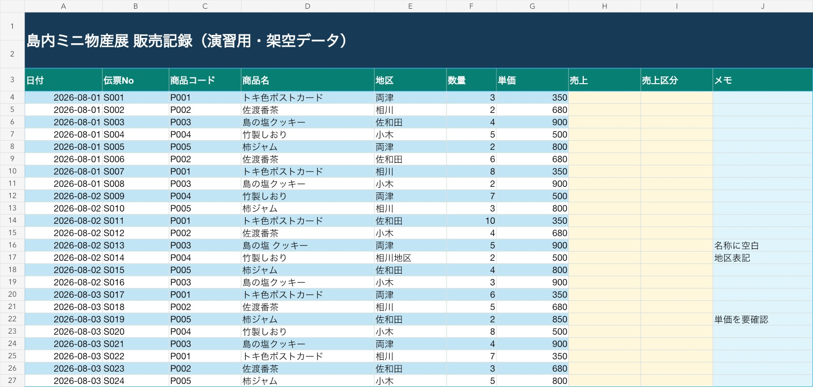

最初に保存｜教材URL・出席票・アンケート
スマートフォンでQRコードを読み取るか、URLを開いてください。教材URLは授業中に何度でも戻れるよう、ブックマークしておきます。
任意準備｜LibreOfficeがあると確認・微修正しやすい
Microsoft Officeが入っていなくても受講できます。さらに、無料のLibreOfficeを入れておくと、AIが作ったExcel・Word・PowerPoint系ファイルを手元で開き、セルや文章を確認・修正できることがあります。
公式サイトからダウンロード
自分のOSとCPUに合うものを選びます。MacはApple SiliconとIntelを間違えないようにしてください。インストールには管理者権限やパスワードが必要になる場合があります。
https://www.libreoffice.org/download/download-libreoffice/Windows、macOS、LinuxとCPUの種類を確認します。MacはApple SiliconかIntelかを選択します。
Windowsはダウンロードしたインストーラーを実行。MacはDMGを開き、LibreOfficeをApplicationsへ移します。
020_practice_sales.xlsxを開き、販売記録シートと黄色のセルが見えるか確認します。
AIの性能より、渡す素材と確認方法が成果を決める
今日の主役は「すごい指示文」ではありません。元になるファイル、変更する場所、完成条件を揃えることです。
事実が書かれたメモと、文体・出力条件を別ファイルにする。
「Excelを直して」ではなく、シート名・セル・範囲まで伝える。
元データ、数式、合計値、未確定事項を最後に照合する。
よい成果物は、4種類の素材からできる
| 頼み方 | AIが困る点 | 改善 |
|---|---|---|
| 「イベントの案内を作って」 | 日時も対象者も文体も分からない | 元メモと作成ルールを添付する |
| 「いい感じにExcelを直して」 | どのシート・セル・完成条件か不明 | 販売記録!H4:H27のように範囲を指定する |
| 「間違いを全部直して」 | 何を正解とするか判断できない | 商品マスタと比較し、修正前に差分一覧を出させる |
3つの演習ファイルを先に保存する
同じフォルダに保存してください。Excelは、作業前に複製して020_practice_sales_自分の名前.xlsxのように名前を変えます。

黄色の列は数式を入れる場所、水色の列は作業メモです。元ファイルは必ず残します。
雑なメモから、根拠のある案内を作る
演習1｜まず書かせず、事実を仕分ける（25分）
添付した2ファイルを使います。 ・020_material_event_memo.txt：内容の事実を確認する元資料 ・020_material_writing_rules.txt：案内文を作るときのルール まだ案内文は書かないでください。最初に次の3表を作ってください。 1. 確定情報：項目／内容／元メモの根拠 2. 要確認事項：曖昧な内容／確認すべき質問／未確認のまま書く場合の扱い 3. 不使用情報：案内に使わない方がよい内容／理由 元資料にない内容は推測で追加しないでください。最後に「案内文を作る前に人が答えるべき質問」を優先順で5件以内にしてください。
30人と40人が混在しているため「要確認」になったか。
存在しないURLをAIが作っていないか。
「できる」と断定せず、正式確認が必要になったか。
演習2｜同じ事実を、3つの用途へ変換する（25分）
人が未確定事項へ回答できない場合は、未確定部分を本文から外します。事実を増やさず、表現だけを用途に合わせます。
先ほど整理した確定情報だけを使い、添付した作成ルールに従って次の3種類を作ってください。 A. Web掲載文：500〜700字。見出し、概要、日時、会場、対象、内容、申込、問い合わせを含める。 B. メール：件名を3案、その後に送信用本文を1案。冒頭で開催目的と日時を伝える。 C. SNS：200字以内。申込リンクは［申込URL］と表記する。 共通条件： ・定員、子ども同伴、当日参加は未確定なので断定しない ・元資料にない魅力や実績を追加しない ・各案の後に「使用した確定情報」と「本文から外した未確定情報」を列挙する ・最後に、3形式の違いを表で説明する
追加修正は、一度に全部言わない
メール本文だけを修正してください。ほかの形式は変更しません。 変更点： ・冒頭2文を短くする ・タイムテーブルを箇条書きにする ・「服装自由」を持ち物の近くへ移動する 修正後、変更した箇所を3点以内で報告してください。元資料にない情報は追加しないでください。
時間が余った人｜HTMLの案内ページにする
3形式のうちWeb掲載文を使い、1ファイルで開けるレスポンシブHTMLを作らせます。確定情報だけを使い、未確定事項は「掲載前チェック」として本文外にまとめるよう指定します。
Excelは「どこを」「どう変えるか」を番地で伝える
列はアルファベット、行は数字
C3は「C列と3行目が交わるセル」です。C3:C20はC3からC20までの縦の範囲です。
販売記録!H4：販売記録シートのH4H4:H27：H4からH27までA3:J27：表全体の長方形
=F4*G4F4の数量 × G4の単価。先頭の=が「これは計算式」の印です。=SUM(H4:H27)H4からH27までを合計します。=IF(H4>=3000,"大口","通常")H4が3,000以上なら「大口」、それ以外なら「通常」と表示します。Excelを1セルずつ動かし、最後に範囲へ広げる
最初から大改造を頼みません。小さく変更し、結果を確かめてから範囲を広げます。
J4に文字を入れ、保存できるか確認。
H4へ数式を入れ、H27まで展開。
IF式、通貨表示、行固定、変更報告まで実行。
Level 1｜1セルだけ変更する
添付したExcelファイルを編集してください。 「販売記録」シートのJ4セルに「練習開始」と入力してください。 それ以外のセルは変更しないでください。 編集後のExcelファイルを出力し、変更したファイル名・シート名・セル番地を報告してください。
Level 2｜売上の数式を縦にコピーする
先ほどのExcelを続けて編集してください。 1. 「販売記録」シートのH4セルに =F4*G4 を入力する 2. H4の数式をH27までコピーする 3. H4:H27を整数の通貨表示にする 4. H4、H5、H27の「数式」と「計算結果」を報告する A:G列の元データ、シート名、行の順序は変更しないでください。編集後のExcelファイルを出力してください。
Level 3｜条件判定と見やすさを追加する
同じExcelに次の変更を追加してください。 1. I4に =IF(H4>=3000,"大口","通常") を入力し、I27までコピーする 2. I4:I27の「大口」を目立つ色にする 3. 3行目までを固定し、下へスクロールしても見出しが見えるようにする 4. 列幅は内容が読める範囲に調整する。ただし列やデータを削除しない 完了後、変更範囲、使用した数式、書式変更、固定した行を箇条書きで報告してください。Excelファイルも出力してください。
=F5*G5へ変化しているか。セル操作を、集計とグラフへつなげる
「集計チャレンジ」シートの黄色セルを埋めます。まず数式だけ、その後にグラフを依頼します。
| 入力先 | 求めるもの | 数式の例 |
|---|---|---|
| B5 | 売上合計 | =SUM('販売記録'!H4:H27) |
| B6 | 平均売上 | =AVERAGE('販売記録'!H4:H27) |
| B7 | 最大売上 | =MAX('販売記録'!H4:H27) |
| B8 | 伝票件数 | =COUNT('販売記録'!H4:H27) |
| B12:B16 | 地区別売上 | SUMIFで地区ごとに集計 |
Excelの「集計チャレンジ」シートを編集してください。 1. B5へ売上合計、B6へ平均売上、B7へ最大売上、B8へ伝票件数を求める数式を入れる 2. A12:A16の地区名を条件にして、B12:B16へ地区別売上をSUMIFで求める 3. A11:B16を使って地区別売上の棒グラフを作る 4. 金額は整数の通貨表示にする 集計元は「販売記録」シートの4〜27行です。集計元の値は変更しないでください。 作業後、B5:B8とB12:B16の数式・結果、グラフの元範囲を報告し、Excelファイルを出力してください。
AIに直させる前に、差分一覧を作らせる
商品マスタを正解の基準として、販売記録と比較します。元データは残し、修正案を別シートに出します。
このExcelの「販売記録」と「商品マスタ」を照合してください。 商品コードをキーにして、商品名と単価の不一致を調べてください。地区名の表記ゆれも探してください。 重要：まだ「販売記録」の元データは変更しないでください。 新しい「確認結果」シートを作り、次の列で差分を出してください。 ・伝票No ・元シートのセル番地 ・項目 ・現在値 ・修正候補 ・根拠 次に、修正候補を適用した「販売記録_修正版」シートを別に作り、売上を再計算してください。 最後に、修正前後の売上合計と差額、検出した不整合の件数を報告し、Excelファイルを出力してください。
答え合わせ｜見つかる3か所
販売記録!D16：「島の塩 クッキー」→ 商品マスタは「島の塩クッキー」販売記録!E17：「相川地区」→ 他の記録は「相川」販売記録!G22：850円 → 商品マスタのP005は800円
「答え合わせ」シートには、マスタ単価で再計算した合計と、正規化後の地区別グラフがあります。
統合課題｜複数の素材から運営資料を作る
テキスト2ファイルと、加工後のExcelを同時に使います。
添付したイベントメモ、案内文ルール、加工後のExcelを使い、イベント運営パッケージを作ってください。 成果物： 1. 参加者向け案内メール 2. 当日スタッフ向けチェックリスト 3. 売上データの要約（合計・地区別上位・要確認データ） 4. 1ファイルで開けるHTMLレポート 条件： ・イベントメモの事実と、Excelの販売実績を混同しない ・それぞれの数字について、どのファイル・シート・セル範囲を根拠にしたか書く ・未確定情報は断定しない ・Excelの不整合を修正前後で説明する ・HTMLには地区別グラフと「人が最終確認する項目」を入れる 最初に作業計画と使用ファイルの役割を示し、私の確認後に成果物を作ってください。
どのファイルを何の根拠に使ったか説明できる。
未確定情報や不整合を隠さず、確認事項として残す。
成果物を開き、数字・表示・ファイル名まで確かめる。
完成品より、「どこまで任せて、何を確認したか」を共有する
加工後のExcel、または作成した案内文・HTMLのいずれか1つ。
使った素材、AIへの指示、うまくいかなかった点、人が確認した点。
未完了の課題番号と、次にAIへ送る1文をメモする。
終了前チェック
最後に発表｜否定しない・自分を責めない
帰る前に｜出席票・アンケートを送信
さらに取り組む発展課題
自分の仕事に近いものを選び、素材・指示・確認の流れを繰り返します。